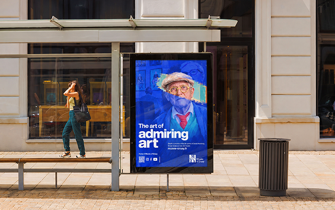

EurekaBrand Identity
Un’identità visiva per una piattaforma professionale pensata per connettere persone, talento e nuove opportunità.
Proyectos de diseño gráfico, web y UI/UX donde combino creatividad, estructura y código para construir experiencias claras, visuales y funcionales.
Un’identità visiva per una piattaforma professionale pensata per connettere persone, talento e nuove opportunità.

Identità visiva e campagna territoriale "Percorrendo Boccadoro" per valorizzare l’oasi naturale di Boccadoro-Ariscianne e riscoprirne il patrimonio.

Un progetto di modellazione 3D realizzato in Blender, in cui ho sviluppato packaging, materiali e visual per Honey + Coconut, con un’estetica fresca, delicata e contemporanea.

Una campagna visiva e una serie di poster ispirati alla filosofia dello "slow looking" di David Hockney, che invitano i visitatori a fermarsi, sedersi e osservare davvero l'arte al Musée d'Orsay.